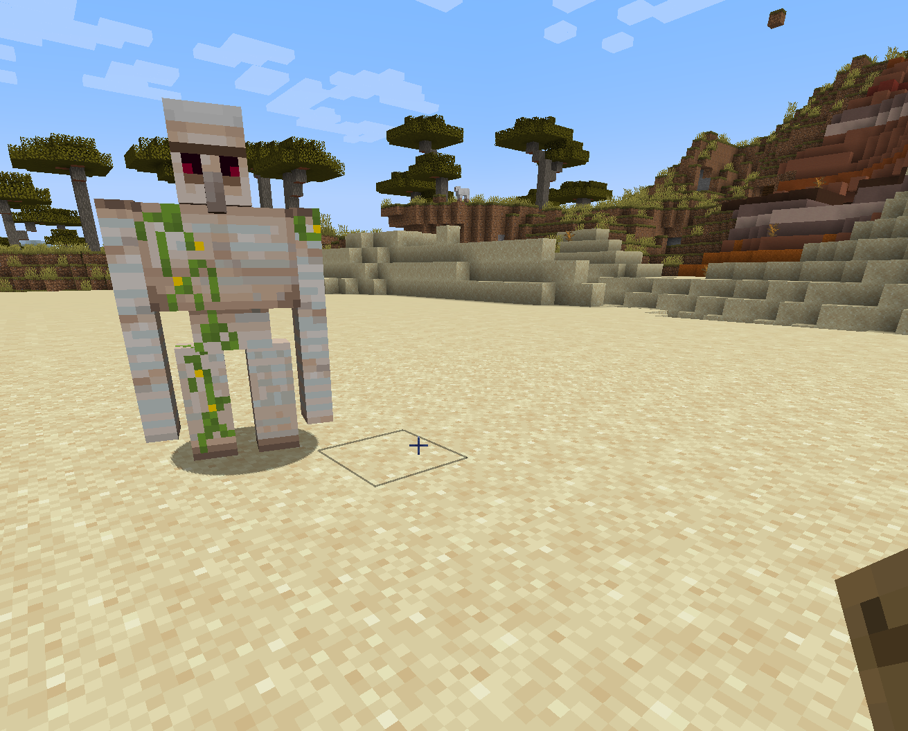

Python Variables#
Introduction#
We now have everything set up ready to start learning some Python!
Note
There are many other excellent Python beginner’s tutorials available for free on the internet, such as:
My tutorials are going to focus on quickly getting into interacting with the world of Minecraft. We won’t be going into programming theory in detail.
Therefore, a tutorial like w3schools will be needed to fill in the background if you want a deeper understanding of the language.
Follow along with these tutorials by having both your Minecraft client and your VSCode windows visible on your screen. You should try out the Python commands shown here and feel free to experiment.
Each time you come back to work on these tutorials you can get yourself ready to go by following Setup for each Tutorial.
Variables, Types and Operators#
Variables provide a place to hold some bit of data for use inside of a computer program. They have the following properties:
Name: a name that is used to identify the variable.
Value: the data that the variable holds.
Type: the type of data that the variable holds.
Scope: in which parts of the code this variable is available.
Note
Scope is a moderately advanced concept which you
can ignore for the moment. Advanced topics like this will be covered
in the explanations section. I suggest skipping anything in the
explanations section on your first read through the tutorials and
then come back later when you have a better understanding of the
fundamentals.
Operators are used to make changes to variables. For example the = operator
assigns a value to a variable, and the + operator adds two variables
together.
In Python we can easily create a variable
using assignment. This table below shows some Python assignment commands using
the = operator.
Command |
Name |
Value |
Type |
|---|---|---|---|
birth_year = 1964 |
birth_year |
1964 |
int (a whole number) |
my_height = 1.94 |
my_height |
1.94 |
float (a decimal number) |
my_name = “giles” |
my_name |
“giles” |
str (a string of characters) |
Note that Python can automatically work out what type of variable you are creating. e.g. it recognizes that using quotes means I want a string of characters. This w3schools variables page has further examples.
Trying out Variables#
Try out the commands below by typing them into the iPython prompt in your VSCode terminal window. Note that input [4] just asks iPython to show the values of the 3 variables you created:
In [1]: birth_year = 1964
In [2]: my_height = 1.94
In [3]: my_name = "giles"
In [4]: birth_year, my_height, my_name
Out[4]: (1964, 1.94, 'giles')
Let’s try another operator - or minus. This operator subtracts the value of
one variable from another. It behaves just like - in basic arithmetic.
Try out the commands below:
In [6]: age = 2022 - birth_year
In [7]: age
Out[7]: 58
This makes a calculation from the value 2022 and the value of the variable
birth_year and assigned it to variable age.
Interactive Python will always print the value returned by the last
command you input, so in Out[7] age evaluates to 58.
Variables in Minecraft#
MCIWB provides some built in variables that you can use. The most important
is called world and it is your entry point into many of the functions
provided by the library.
world is a special type of variable called an object which can
have many values stored in its properties.
Objects can also have methods which execute code.
One property of world is player. player is also an object and it
has a property called pos which holds the player’s current position.
You can access the player’s location like this:
In [10]: world.player.pos
Out[10]: Vec3(x=633, y=73, z=-1665)
out[10] shows the player’s current position is x=633, y=73, z=-1665.
Try moving your player around and see how the position changes by repeating the above command.
Note
You will notice that the position is reported as a type of variable called Vec3.
Vec3 holds the Minecraft coordinates that you may be familiar with if you have used e.g. the teleport command.
For advanced detail on what this all means see Minecraft’s Coordinate System.
An example of a method on world is set_block which will place
a block in a particular position.
Make sure your player is standing on the flat area of sand and execute the set_block method like this:
pos = world.player.pos
world.set_block(pos, Item.IRON_BLOCK)
Your player should have been bumped out of their position and if you turn around you will see an iron block.
What you did here was assign your
player’s position to the variable pos and then called the set_block
method on world. You told set_block to use pos for the position and
IRON_BLOCK for the block to place.
Item is another built-in variable that you can use. It is a list of all the
types of blocks in Minecraft. If you type Item.IR in iPython and then
hit Tab you will see a list of all the items in Minecraft that begin with
IR. See Command Completion for more details.
Iron Golem#
OK, let’s make an iron golem! Copy and paste the following Python code commands into the Python terminal:
Note
To copy and paste code from this page to your terminal:
Drag the mouse to highlight the code you want to Copy
right click the highlight and click
Copyto copy the code to the clipboardright click in your Python Terminal and choose
Paste
world.set_block(pos, Item.IRON_BLOCK)
arms = pos + Direction.UP
world.set_block(arms, Item.IRON_BLOCK)
world.set_block(arms + Direction.EAST, Item.IRON_BLOCK)
world.set_block(arms + Direction.WEST, Item.IRON_BLOCK)
world.set_block(arms + Direction.UP, Item.CARVED_PUMPKIN)
Yay! You can paste again to create another one.


Say hello to the Iron Golem, your first Python creation!#
(See “Creation” in this article https://minecraft.wiki/w/Iron_Golem if you don’t know about making iron golems)
How does this work? We use set_block to place all the necessary blocks
in the world. We use the variables pos (which we set earlier) and arms
to control where those blocks are placed.
Direction provides values that will move a position by one block in a
particular direction when added/subtracted to/from that position. Note that we
are using the operator + and that it can add more than just numbers.
So, first we place the golem’s feet at pos.
Then we move UP one block from the position pos to the arm level of
the golem and save that position in arms. Now we can step EAST
and WEST from arms to make the arms. Finally we step UP to make the head.